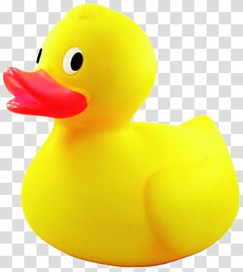

My Fancy New Webpage (Please Change Me.)
Lower level heading
Lowest level yet
Welcome to my site.

- apples
- oranges
- bananas
- blueberries

A friendly duck who wants to assist you with coding.
We are at Penn State Erie, The Behrend College.
Here is a link to the Code View of our textAnalysis-Hub repository.